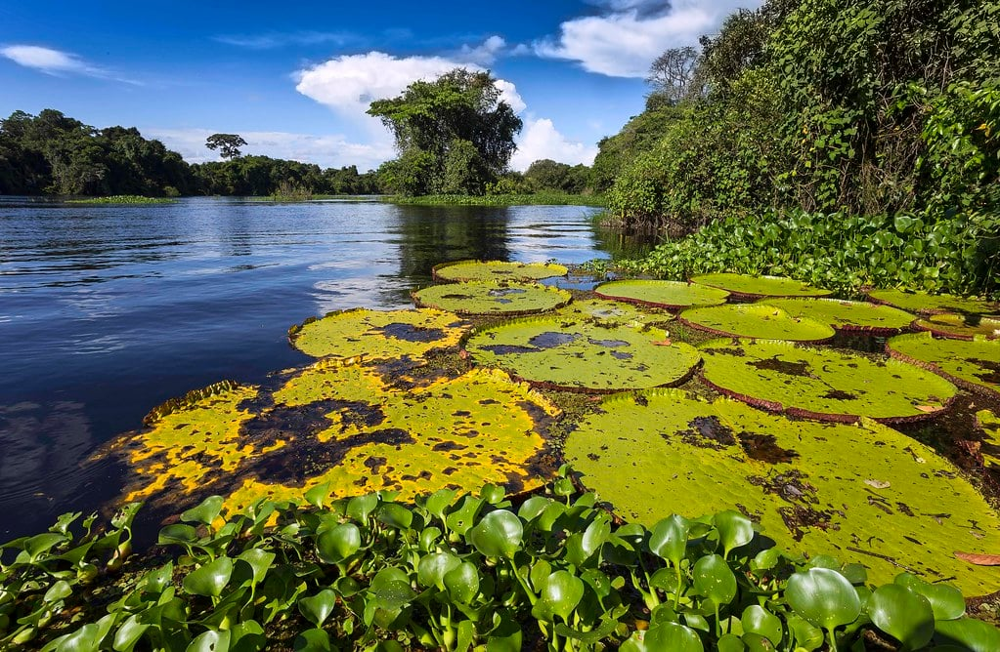

Rondônia é um estado localizado na região Norte do Brasil, conhecido por sua vasta floresta amazônica e por sua importância na preservação da biodiversidade. Sua capital é Porto Velho, uma cidade que serve como centro econômico e de transporte na região. Rondônia tem uma economia baseada principalmente na agropecuária, com destaque para a produção de soja, milho e gado. O estado também possui rios importantes, como o rio Madeira, que contribuem para a navegação e o desenvolvimento local. Além disso, Rondônia é uma região de grande riqueza natural, com áreas de floresta preservada e uma cultura que mistura influências indígenas, ribeirinhas e migrantes.
